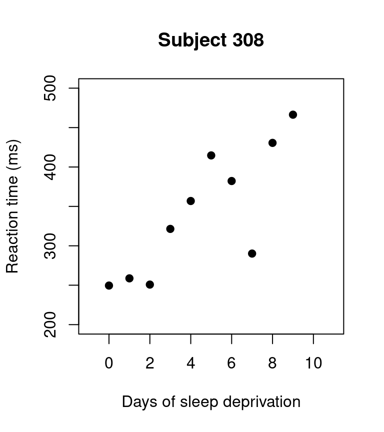
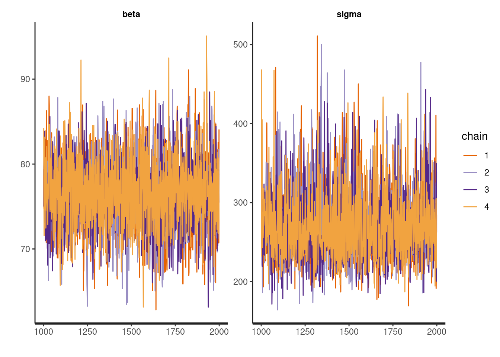
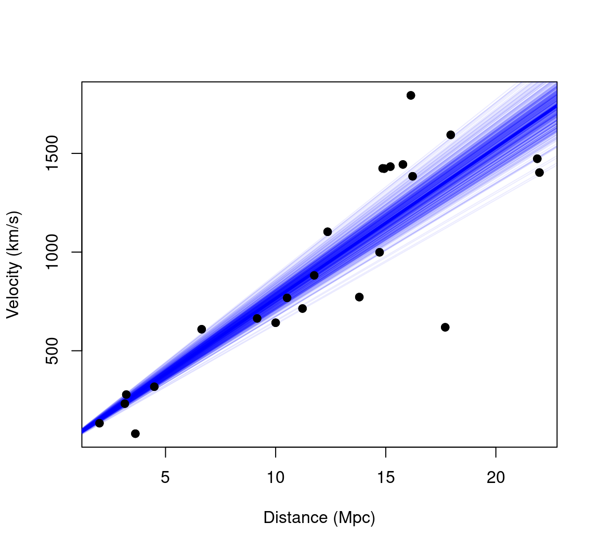
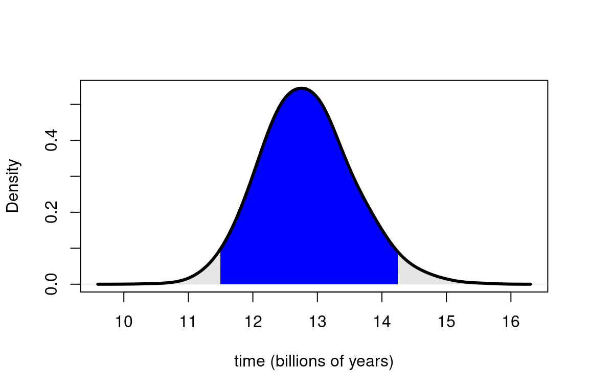
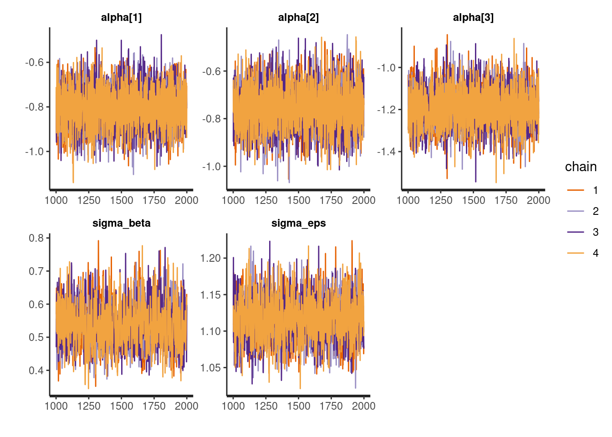
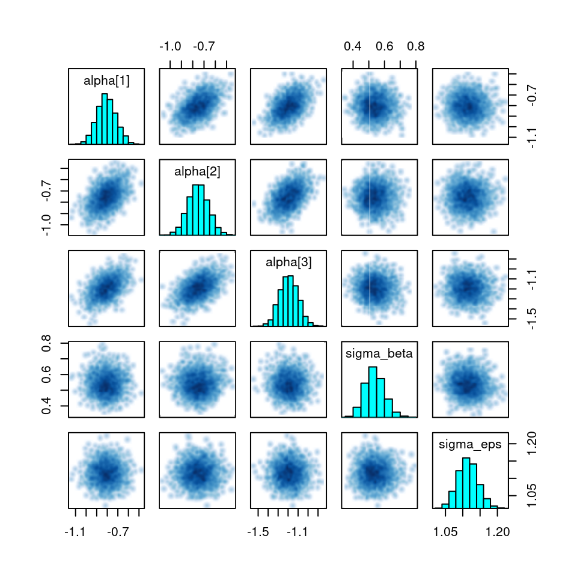
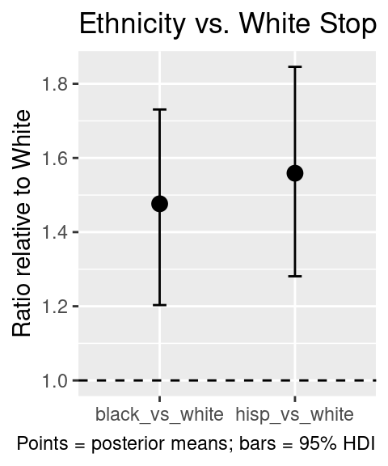
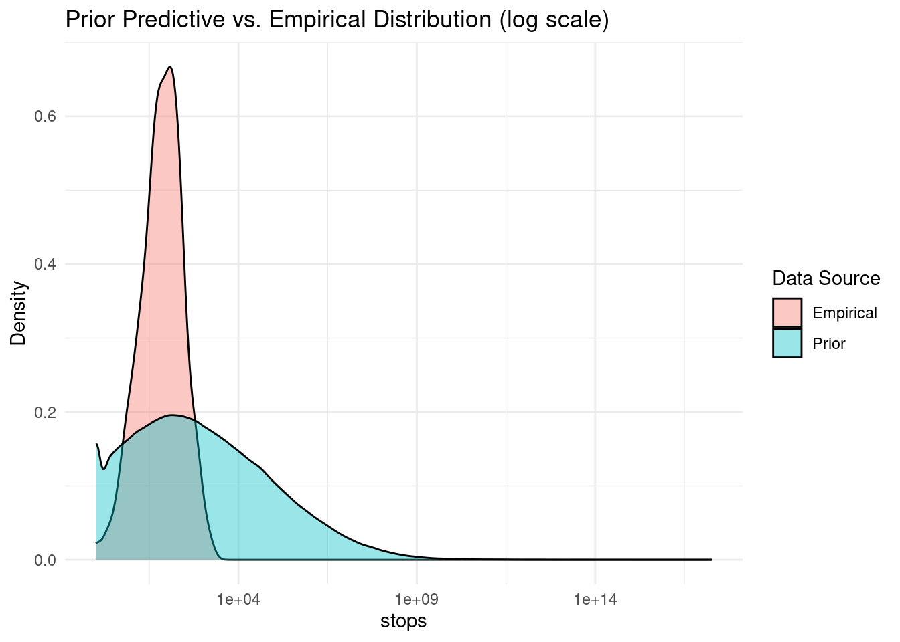

Activity 1 — MCMC “by hand” with Metropolis algorithm (simple linear regression)
Goal: Plot the two scaled densities and the optimal criterion; check that \(c\) is at the cross-over point of hte probability density functions.
Setup
Code
# Packages used herelibrary(lme4) # for the sleepstudy data# Pick example subject and plot their datapar(mfrow =c(1,1))with(sleepstudy[sleepstudy$Subject =="308",],plot(Days, Reaction, pch =19, main ="Subject 308",xlab ="Days of sleep deprivation", ylab ="Reaction time (ms)",xlim =c(-1, 11), ylim =c(200, 500)))

Code
# Save vectors for the model code belowx <- sleepstudy$Days[ sleepstudy$Subject =="308" ]y <- sleepstudy$Reaction[ sleepstudy$Subject =="308" ]
1) Log-likelihood
The model is:\[y_i \sim \mathcal{N}(\alpha + \beta x_i, \sigma_{\epsilon}^2)\]
Where \(\alpha\) is the intercept, and \(\beta\) the slope. We will work with \(\log \sigma_{\epsilon}\) as the third parameter for stability (and so that we don’t need to worry about the lower boundary at zero).
Code
# par = c(intercept, slope, log_sigma)loglik <-function(par){ pred <- par[1] + par[2] * xsum(dnorm(y, mean = pred, sd =exp(par[3]), log =TRUE))}
2) Priors (and a quick visual check)
We use an informative prior, as there is relevant prior knowledge that we can rely on (e.g. that average simple reaction times in humans tend to be around 250 ms): - \(\alpha \sim \mathcal{N} (250, 180^2)\) - \(\beta \sim \mathcal{N} (20, 20^2)\) - \(\log \sigma_{\epsilon} \sim \mathcal{N} (4, 1^2)\)
Code
logprior <-function(par){dnorm(par[1], mean =250, sd =180, log =TRUE) +dnorm(par[2], mean =20, sd =20, log =TRUE) +dnorm(par[3], mean =4, sd =1, log =TRUE)}
Is it useful to visualise it: these are our a prior expectations about plausible parameter values.
Code
par(op <-par(no.readonly =TRUE)); on.exit(par(op), add =TRUE)par(mfrow =c(1,3), mar =c(4,4,2,1))curve(dnorm(x, mean =250, sd =180), from =0, to =1000,xlab ="Intercept", ylab ="prior density", col ="blue")curve(dnorm(x, mean =20, sd =20), from =-50, to =50,xlab ="Slope", ylab ="prior density", col ="blue")xx <-seq(-1, 6, length.out =500)yy <-dnorm(xx, mean =4, sd =1)plot(exp(xx), yy, type ="l", xlab =expression(sigma[epsilon]),ylab ="prior density", col ="blue")
We use a diagonal Gaussian proposal with tunable step sizes.
Code
proposal_sd <-c(15, 5, 0.2) # try tweaking these later proposalfunction <-function(par){rnorm(3, mean = par, sd = proposal_sd)}
5) Metropolis sampler
Code
run_metropolis_MCMC <-function(startvalue, iterations){# set up an empty array to store sampled values chain <-array(dim =c(iterations+1,3))# put starting values at top of arrays chain[1,] <- startvaluefor (i in1:iterations){# draw a random proposal proposal <-proposalfunction(chain[i,])# ratio of posterior density between new and old values a <-exp(logposterior(proposal) -logposterior(chain[i,]))# sample random number & accept/reject the parameter valuesif (runif(1) < a){ chain[i+1,] <- proposal }else{ chain[i+1,] <- chain[i,] } }return(chain)}
6) Run and visualize
Code
# Settingsstartvalue <-c(250, 20, 5) # c(intercept, slope, log_sigma)iterations <-20000# Run chainchain <-run_metropolis_MCMC(startvalue, iterations)# Quick diagnostics and LS referenceburnIn <-3000acceptance <-1-mean(duplicated(chain[-(1:burnIn), ]))LSfit <-lm(y ~ x)interceptLS <-coef(LSfit)[1]slopeLS <-coef(LSfit)[2]sigmaLS <-summary(LSfit)$sigma# Plotspar(mfrow =c(2,3))hist(chain[-(1:burnIn), 1], main ="Intercept", border ="white",col ="dark grey", breaks =20)abline(v = interceptLS, col ="red", lwd =2)hist(chain[-(1:burnIn), 2], main ="Slope", border ="white",col ="dark grey", breaks =20)abline(v = slopeLS, col ="red", lwd =2)hist(exp(chain[-(1:burnIn), 3]), main =expression(sigma[epsilon]),border ="white", col ="dark grey", breaks =20)abline(v = sigmaLS, col ="red", lwd =2)plot(chain[-(1:burnIn), 1], type ="l", main ="Chain values: intercept")abline(h = interceptLS, col ="red", lwd =2)plot(chain[-(1:burnIn), 2], type ="l", main ="Chain values: slope")abline(h = slopeLS, col ="red", lwd =2)plot(exp(chain[-(1:burnIn), 3]), type ="l", main ="Chain values: sigma")abline(h = sigmaLS, col ="red", lwd =2)
Experiment by changing the priors and the proposal distribution, then run the sampler again. Observe how these changes affect convergence, acceptance rate, and the shape and location of the posterior distributions.
Activity 2 — Linear regression in Stan
Goal: Fit a no-intercept Bayesian linear regression to the Hubble data in Stan, check convergence, summarize the posterior for β and σ, and then transform the posterior for β into a posterior for the age of the universe (in billions of years). Finally, visualize uncertainty both on the parameter and data scales.
print(fit, pars =c("beta","sigma"), probs =c(.025,.5,.975))
Inference for Stan model: anon_model.
4 chains, each with iter=2000; warmup=1000; thin=1;
post-warmup draws per chain=1000, total post-warmup draws=4000.
mean se_mean sd 2.5% 50% 97.5% n_eff Rhat
beta 76.55 0.08 4.19 68.35 76.50 84.84 2558 1
sigma 273.50 0.97 44.17 204.91 267.99 380.80 2092 1
Samples were drawn using NUTS(diag_e) at Thu Nov 6 17:12:27 2025.
For each parameter, n_eff is a crude measure of effective sample size,
and Rhat is the potential scale reduction factor on split chains (at
convergence, Rhat=1).
Code
traceplot(fit, pars =c("beta","sigma"))

3) Extract posterior draws and estimate the age of the universe
Code
mpc_km <-3.09e19# km per Megaparsecsec_per_year <-60^2*24*365# transform in Kmhubble.const <- posterior_samples$beta/ mpc_km # invert to get age in secondsage <-1/hubble.const# transform age in billion yearsage <- (age/sec_per_year) /10^9# point estimatemean(age)
[1] 12.83895
We can use a percentile method to determine a credibility interval
The percentile method works well in most cases but can be misleading for asymmetric posteriors, where for example the mode (the most probable value) may fall outside the interval. A highest posterior density (HPD, also referred to as HDI) interval is the shortest interval containing a specified proportion of the posterior mass. Every point inside has higher probability density than any point outside.
In our example, the posterior for β is roughly symmetric, so percentile and HPD intervals are nearly identical.
Here is how we can compute this using the handy tidybayes package
Code
fit %>%spread_draws(beta) %>%mean_hdi(beta, .width =0.95)
Visualise posterior over the age of the universe as simple histogram
Code
hist(age, breaks =30, xlab="time (billions of years)")
We can also visualise posterior samples as regression lines, to give a visual summary of the precision of model predictions
Code
# basic plotplot(d$distance, d$velocity, xlab ="Distance (Mpc)", ylab ="Velocity (km/s)", pch =19)# draw a subset of posterior linesidx <-sample(seq_along(posterior_samples$beta), 500)for(i in idx){abline(a =0, b = posterior_samples$beta[i], lwd =1, col =rgb(0,0,1,0.08))}abline(a =0, b =median(posterior_samples$beta), lwd =3, col ="blue")# (redraw the points to prevent them being hidden by the lines)points(d$distance, d$velocity, pch=19)

We can make this a bit nicer e.g. by adding smooth density curve and credible interval
Code
# Get HDI intervalhdi <-mean_hdi(age, .width =0.95)# Compute densityd <-density(age, adjust=2)# Plotplot(d, main ="", xlab ="time (billions of years)", lwd =2)# Fill inside HDIpolygon(c(d$x[d$x >= hdi$ymin & d$x <= hdi$ymax], hdi$ymax, hdi$ymin),c(d$y[d$x >= hdi$ymin & d$x <= hdi$ymax], 0, 0),col ="blue", border =NA)# Fill outside HDIpolygon(c(d$x[d$x < hdi$ymin], hdi$ymin, d$x[1]),c(d$y[d$x < hdi$ymin], 0, 0),col ="gray90", border =NA)polygon(c(hdi$ymax, d$x[d$x > hdi$ymax], rev(d$x[d$x > hdi$ymax])[1]),c(0, d$y[d$x > hdi$ymax], 0),col ="gray90", border =NA)# Redraw density line on toplines(d, lwd =3)

Using the “Generated quantities” block
Stan models have also other types of block. One of them is the generated quantities block, which we can use to compute quantities of interest that depends on posterior parameters. in this block we can include also functions that simulates data, so it is useful for things such as posterior predictive checks.
Inference for Stan model: anon_model.
4 chains, each with iter=2000; warmup=1000; thin=1;
post-warmup draws per chain=1000, total post-warmup draws=4000.
mean se_mean sd 2.5% 50% 97.5% n_eff Rhat
beta 76.54 0.08 4.13 68.52 76.57 84.51 3001 1
sigma 273.78 0.79 42.82 204.53 268.59 369.80 2928 1
age_universe 12.84 0.01 0.70 11.59 12.80 14.30 2981 1
Samples were drawn using NUTS(diag_e) at Fri Nov 7 14:52:42 2025.
For each parameter, n_eff is a crude measure of effective sample size,
and Rhat is the potential scale reduction factor on split chains (at
convergence, Rhat=1).
Activity 3 — Overdispersed Poisson GLMM
Goal: Model the rate of police stops across ethnic groups and precincts, adjusting for exposure (arrests) and allowing for overdispersion and hierarchical structure.
Context: Study of the NYPD stop-and-frisk policy, investigating possible ethnic bias in police stops.
Source: Records of ≈175,000 stops over 15 months (1998–1999), obtained by the New York State Attorney General’s Office.
Variables:
stops — Number of police stops recorded in 1998–1999 for the cell.
pop — Estimated population size of the ethnic group within the precinct (exposure candidate).
past.arrests — Number of 1997 arrests (DCJS) for the same group/crime category (proxy for crime exposure).
instead of sampling \(\beta_p\) directly from \(N(0,\sigma_\beta^2)\). This often improves sampling efficiency in hierarchical models. The same logic applies to (_{ep}).
3) Compile and run
Code
fit <-stan(file ="stan_code/overdispersed_poisson.stan",data = stan_data,iter =2000,chains =4,cores =4)
We can use the print method for a quick look at the results
Code
print(fit, pars =c("alpha", "sigma_beta", "sigma_eps"))
Inference for Stan model: anon_model.
4 chains, each with iter=2000; warmup=1000; thin=1;
post-warmup draws per chain=1000, total post-warmup draws=4000.
mean se_mean sd 2.5% 25% 50% 75% 97.5% n_eff Rhat
alpha[1] -0.81 0 0.09 -0.98 -0.87 -0.81 -0.75 -0.62 5915 1
alpha[2] -0.75 0 0.09 -0.93 -0.81 -0.75 -0.69 -0.57 7333 1
alpha[3] -1.19 0 0.09 -1.37 -1.26 -1.19 -1.13 -1.01 6762 1
sigma_beta 0.54 0 0.06 0.42 0.49 0.54 0.58 0.67 1364 1
sigma_eps 1.12 0 0.03 1.06 1.09 1.11 1.13 1.17 1834 1
Samples were drawn using NUTS(diag_e) at Fri Nov 7 18:33:03 2025.
For each parameter, n_eff is a crude measure of effective sample size,
and Rhat is the potential scale reduction factor on split chains (at
convergence, Rhat=1).
Here, alpha are the ethnic-group log-effects, sigma_beta is the precinct-level standard deviation, and sigma_eps is the observation-level overdispersion parameter.
4) Diagnostic checks
Code
# Traceplotstraceplot(fit, pars =c("alpha", "sigma_beta", "sigma_eps"))

Code
# Pairs plot for some key parameterspairs(fit, pars =c("alpha[1]", "alpha[2]", "alpha[3]", "sigma_beta", "sigma_eps"))

5) Inference
We use tidybayes to extract samples and summarize. Suppose we want to look at the exponentiated ethnic effects (relative stops vs. arrests).
Code
library(tidybayes)posterior <- fit %>%spread_draws(alpha[e]) %>%mutate(rate =exp(alpha)) # exponentiate to interpret as a multiplicative factor# Summarize the rate by ethnicityposterior %>%group_by(e) %>%mean_hdi(rate, .width =0.95)
# A tibble: 3 × 7
e rate .lower .upper .width .point .interval
<int> <dbl> <dbl> <dbl> <dbl> <chr> <chr>
1 1 0.448 0.373 0.532 0.95 mean hdi
2 2 0.473 0.390 0.559 0.95 mean hdi
3 3 0.305 0.252 0.362 0.95 mean hdi
If e=1 = black, e=2 = hispanic, e=3 = white, these give the average ratio of stops to arrests for each ethnicity, controlling for precinct and overdispersion.
You might then compare black vs. white, etc., by calculating differences or ratios in the posterior draws.
Code
posterior_ratios <- posterior %>%pivot_wider(id_cols =c(.chain, .iteration, .draw), # these 3 columns identify each drawnames_from = e, # which column to pivot onvalues_from = rate, # which column holds the valuesnames_prefix ="eth_") %>%mutate(black_vs_white = eth_1 / eth_3,hisp_vs_white = eth_2 / eth_3) %>%# Pivot longer so each ratio is in its own rowpivot_longer(cols =c(black_vs_white, hisp_vs_white),names_to ="contrast",values_to ="ratio" ) %>%# Summarize with mean_hdi -> returns columns .mean, .lower, .uppergroup_by(contrast) %>%mean_hdi(ratio, .width =0.95)posterior_ratios
# A tibble: 2 × 7
contrast ratio .lower .upper .width .point .interval
<chr> <dbl> <dbl> <dbl> <dbl> <chr> <chr>
1 black_vs_white 1.48 1.20 1.73 0.95 mean hdi
2 hisp_vs_white 1.56 1.28 1.85 0.95 mean hdi
This gives an estimate of how many times more likely stops of black (or hispanic) are relative to stops of white people, after controlling for arrests, precinct differences, and overdispersion.
To visualise this with a plot:
Code
ggplot(posterior_ratios, aes(x = contrast, y = ratio)) +geom_point(size=3) +geom_hline(yintercept=1, lty=2)+geom_errorbar(aes(ymin = .lower, ymax = .upper), width =0.1) +labs(x =NULL,y ="Ratio relative to White",title ="Ethnicity vs. White Stop Ratios",caption ="Points = posterior means; bars = 95% HDI" )

5) Prior predictive check
Code
N <-nrow(d)n_eth <-length(unique(d$eth))n_prec <-length(unique(d$precinct))# Decide how many draws from the prior to simulaten_sims <-500# We'll store all simulated Y values in a single big vector# so we can compare them to the observed distributionall_prior_stops <-numeric(0)set.seed(42) # reproducibilityfor (s in1:n_sims) {# 1) Sample the parameters from their priors alpha_draw <-rnorm(n_eth, mean =0, sd =5) # alpha: one for each ethnicity sigma_beta_draw <-rexp(1, rate =1) beta_raw_draw <-rnorm(n_prec, 0, 1) beta_draw <- sigma_beta_draw * beta_raw_draw sigma_eps_draw <-rexp(1, rate =1) # Overdispersion eps_raw_draw <-rnorm(N, 0, 1) eps_draw <- sigma_eps_draw * eps_raw_draw# 2) Generate y (stops) from Poisson for each observation i past_arrests_offset <-ifelse(d$past.arrests ==0, 0.5, d$past.arrests)# compute the linear predictor for each row i lambda_vec <-numeric(N)for (i inseq_len(N)) { e <- d$eth[i] p <- d$precinct[i] lambda_vec[i] <- alpha_draw[e] + beta_draw[p] + eps_draw[i] }# Poisson means mu_vec <- past_arrests_offset * (15/12) *exp(lambda_vec)# sample from Poisson y_sim <-rpois(N, mu_vec)# 3) Store in a big vector for later comparison all_prior_stops <-c(all_prior_stops, y_sim)}# Now we have n_sims * N simulated 'stops' from the prior# Compare with the empirical distribution:observed_stops <- d$stopsdf_plot <-tibble(value =c((observed_stops ), (all_prior_stops )),type =rep(c("Empirical", "Prior"), c(length(observed_stops), length(all_prior_stops))))# Plot densitiesggplot(df_plot, aes(x = value, fill = type)) +geom_density(alpha =0.4) +labs(x ="stops", y ="Density",title ="Prior Predictive vs. Empirical Distribution (log scale)",fill ="Data Source" ) +theme_minimal()+scale_x_log10()

Source Code
---title: "Building and Customising Statistical Models with Stan and R: An Introduction to Bayesian Inference<br> Worksheet"author: "Matteo Lisi"format: html: toc: true code-tools: true # run/copy buttons code-fold: showexecute: echo: true warning: false message: false---```{r, echo=FALSE, message=FALSE}library(tidyverse)library(rstan)library(lme4)```## Activity 1 — MCMC "by hand" with Metropolis algorithm (simple linear regression)> Goal: Plot the two scaled densities and the optimal criterion; check that $c$ is at the cross-over point of hte probability density functions.#### Setup```{r}#| fig-align: 'center'#| fig-cap-location: margin#| fig-width: 4#| fig-height: 4.5# Packages used herelibrary(lme4) # for the sleepstudy data# Pick example subject and plot their datapar(mfrow =c(1,1))with(sleepstudy[sleepstudy$Subject =="308",],plot(Days, Reaction, pch =19, main ="Subject 308",xlab ="Days of sleep deprivation", ylab ="Reaction time (ms)",xlim =c(-1, 11), ylim =c(200, 500)))# Save vectors for the model code belowx <- sleepstudy$Days[ sleepstudy$Subject =="308" ]y <- sleepstudy$Reaction[ sleepstudy$Subject =="308" ]```##### 1) Log-likelihoodThe model is:$$y_i \sim \mathcal{N}(\alpha + \beta x_i, \sigma_{\epsilon}^2)$$Where $\alpha$ is the intercept, and $\beta$ the slope. We will work with $\log \sigma_{\epsilon}$ as the third parameter for stability (and so that we don't need to worry about the lower boundary at zero).```{r}# par = c(intercept, slope, log_sigma)loglik <-function(par){ pred <- par[1] + par[2] * xsum(dnorm(y, mean = pred, sd =exp(par[3]), log =TRUE))}```##### 2) Priors (and a quick visual check)We use an informative prior, as there is relevant prior knowledge that we can rely on (e.g. that average simple reaction times in humans tend to be around 250 ms):- $\alpha \sim \mathcal{N} (250, 180^2)$- $\beta \sim \mathcal{N} (20, 20^2)$- $\log \sigma_{\epsilon} \sim \mathcal{N} (4, 1^2)$```{r}logprior <-function(par){dnorm(par[1], mean =250, sd =180, log =TRUE) +dnorm(par[2], mean =20, sd =20, log =TRUE) +dnorm(par[3], mean =4, sd =1, log =TRUE)}```Is it useful to visualise it: these are our _a prior_ expectations about plausible parameter values.```{r}#| fig-align: 'center'#| fig-width: 9#| fig-height: 3par(op <-par(no.readonly =TRUE)); on.exit(par(op), add =TRUE)par(mfrow =c(1,3), mar =c(4,4,2,1))curve(dnorm(x, mean =250, sd =180), from =0, to =1000,xlab ="Intercept", ylab ="prior density", col ="blue")curve(dnorm(x, mean =20, sd =20), from =-50, to =50,xlab ="Slope", ylab ="prior density", col ="blue")xx <-seq(-1, 6, length.out =500)yy <-dnorm(xx, mean =4, sd =1)plot(exp(xx), yy, type ="l", xlab =expression(sigma[epsilon]),ylab ="prior density", col ="blue")```##### 3) Unnormalized log-posterior```{r}logposterior <-function(par){loglik(par) +logprior(par)}```##### 4) Random-walk proposalWe use a diagonal Gaussian proposal with tunable step sizes.```{r}proposal_sd <-c(15, 5, 0.2) # try tweaking these later proposalfunction <-function(par){rnorm(3, mean = par, sd = proposal_sd)}```##### 5) Metropolis sampler```{r}run_metropolis_MCMC <-function(startvalue, iterations){# set up an empty array to store sampled values chain <-array(dim =c(iterations+1,3))# put starting values at top of arrays chain[1,] <- startvaluefor (i in1:iterations){# draw a random proposal proposal <-proposalfunction(chain[i,])# ratio of posterior density between new and old values a <-exp(logposterior(proposal) -logposterior(chain[i,]))# sample random number & accept/reject the parameter valuesif (runif(1) < a){ chain[i+1,] <- proposal }else{ chain[i+1,] <- chain[i,] } }return(chain)}```##### 6) Run and visualize```{r}# Settingsstartvalue <-c(250, 20, 5) # c(intercept, slope, log_sigma)iterations <-20000# Run chainchain <-run_metropolis_MCMC(startvalue, iterations)# Quick diagnostics and LS referenceburnIn <-3000acceptance <-1-mean(duplicated(chain[-(1:burnIn), ]))LSfit <-lm(y ~ x)interceptLS <-coef(LSfit)[1]slopeLS <-coef(LSfit)[2]sigmaLS <-summary(LSfit)$sigma# Plotspar(mfrow =c(2,3))hist(chain[-(1:burnIn), 1], main ="Intercept", border ="white",col ="dark grey", breaks =20)abline(v = interceptLS, col ="red", lwd =2)hist(chain[-(1:burnIn), 2], main ="Slope", border ="white",col ="dark grey", breaks =20)abline(v = slopeLS, col ="red", lwd =2)hist(exp(chain[-(1:burnIn), 3]), main =expression(sigma[epsilon]),border ="white", col ="dark grey", breaks =20)abline(v = sigmaLS, col ="red", lwd =2)plot(chain[-(1:burnIn), 1], type ="l", main ="Chain values: intercept")abline(h = interceptLS, col ="red", lwd =2)plot(chain[-(1:burnIn), 2], type ="l", main ="Chain values: slope")abline(h = slopeLS, col ="red", lwd =2)plot(exp(chain[-(1:burnIn), 3]), type ="l", main ="Chain values: sigma")abline(h = sigmaLS, col ="red", lwd =2)```##### 7) Summaries (credible interval for slope)```{r}# Remove initial burn-inburnIn <-5000slope_samples <- chain[-(1:burnIn), 2]# Posterior meanmean(slope_samples)# 95% credible interval (percentile method)alpha <-0.05round(c(quantile(slope_samples, probs = alpha/2),quantile(slope_samples, probs =1- alpha/2)), 2)```#### Further taskExperiment by changing the priors and the proposal distribution, then run the sampler again. Observe how these changes affect convergence, acceptance rate, and the shape and location of the posterior distributions.## Activity 2 — Linear regression in Stan> Goal: Fit a no-intercept Bayesian linear regression to the Hubble data in Stan, check convergence, summarize the posterior for β and σ, and then transform the posterior for β into a posterior for the age of the universe (in billions of years). Finally, visualize uncertainty both on the parameter and data scales.#### SetupLoad data```{r}d <-read.csv("data/hubble.csv")str(d)head(d)```Quick plot```{r}#| fig-align: 'center'#| fig-cap-location: margin#| fig-width: 4#| fig-height: 4.5plot(d$distance, d$velocity,xlab="Distance [Mpc]", ylab="Velocity [km/s]",pch=19)```##### 1) Stan codeSaved in the repository as `stan_code/hubble_model.stan````{.stan}data { int<lower=1> N; vector[N] distance; // Mpc vector[N] velocity; // km/s}parameters { real<lower=0> beta; // (km/s)/Mpc real<lower=0> sigma; // km/s}model { // weakly-informative half-normal style via <lower=0> beta ~ normal(0, 200); sigma ~ normal(0, 2000); velocity ~ normal(beta * distance, sigma);}```##### 2) Preparing data for modelling in StanWe prepare data as list, and include also the number of observations `N`, which is needed in Stan to declare the size of data vectors.```{r}stan_data <-list(N =nrow(d),distance = d$distance, # Mpcvelocity = d$velocity # km/s)str(stan_data)```##### 3) Fit the model and check convergence```{r, echo=FALSE}fit <- readRDS("outputs/hubble_fit.RDS")```Load `rstan` library and run sampling of posterior```{r, eval=FALSE}library(rstan)rstan_options(auto_write = TRUE)options(mc.cores = max(1, parallel::detectCores() - 1))fit <- stan( file = "stan_code/hubble_model.stan", data = stan_data, iter = 2000, chains = 4)```Extract the posterior samples, and store them in a database format using the `tidybayes` package```{r}library(tidyverse)library(tidybayes)posterior_samples <- fit %>%spread_draws(beta) head(posterior_samples)```Examine results & assess convergence```{r}print(fit, pars =c("beta","sigma"), probs =c(.025,.5,.975))traceplot(fit, pars =c("beta","sigma"))```##### 3) Extract posterior draws and estimate the age of the universe```{r}mpc_km <-3.09e19# km per Megaparsecsec_per_year <-60^2*24*365# transform in Kmhubble.const <- posterior_samples$beta/ mpc_km # invert to get age in secondsage <-1/hubble.const# transform age in billion yearsage <- (age/sec_per_year) /10^9# point estimatemean(age)```We can use a percentile method to determine a credibility interval```{r}# 95% Bayesian credible intervalalpha <-0.05round(c(quantile(age, probs = alpha/2),quantile(age, probs =1-alpha/2)),digits=2)```::: callout-tip#### Highest posterior density intervalThe percentile method works well in most cases but can be misleading for asymmetric posteriors, where for example the mode (the most probable value) may fall outside the interval.A highest posterior density (HPD, also referred to as HDI) interval is the shortest interval containing a specified proportion of the posterior mass. _Every point inside has higher probability density than any point outside._In our example, the posterior for β is roughly symmetric, so percentile and HPD intervals are nearly identical.Here is how we can compute this using the handy `tidybayes` package```{r}fit %>%spread_draws(beta) %>%mean_hdi(beta, .width =0.95)```Or alternatively, computing the interval for more than one parameter at the same time:```{r}fit %>%gather_draws(beta, sigma) %>%group_by(.variable) %>%mean_hdi(.value, .width =0.95)```:::##### 4) Visualisation of uncertaintyVisualise posterior over the age of the universe as simple histogram```{r}#| fig-align: 'center'#| fig-cap-location: margin#| fig-width: 6#| fig-height: 4hist(age, breaks =30, xlab="time (billions of years)")```We can also visualise posterior samples as regression lines, to give a visual summary of the precision of model predictions```{r}#| fig-align: 'center'#| fig-cap-location: margin#| fig-width: 6#| fig-height: 5.5# basic plotplot(d$distance, d$velocity, xlab ="Distance (Mpc)", ylab ="Velocity (km/s)", pch =19)# draw a subset of posterior linesidx <-sample(seq_along(posterior_samples$beta), 500)for(i in idx){abline(a =0, b = posterior_samples$beta[i], lwd =1, col =rgb(0,0,1,0.08))}abline(a =0, b =median(posterior_samples$beta), lwd =3, col ="blue")# (redraw the points to prevent them being hidden by the lines)points(d$distance, d$velocity, pch=19)```We can make this a bit nicer e.g. by adding smooth density curve and credible interval```{r}#| fig-align: 'center'#| fig-cap-location: margin#| fig-width: 6#| fig-height: 4# Get HDI intervalhdi <-mean_hdi(age, .width =0.95)# Compute densityd <-density(age, adjust=2)# Plotplot(d, main ="", xlab ="time (billions of years)", lwd =2)# Fill inside HDIpolygon(c(d$x[d$x >= hdi$ymin & d$x <= hdi$ymax], hdi$ymax, hdi$ymin),c(d$y[d$x >= hdi$ymin & d$x <= hdi$ymax], 0, 0),col ="blue", border =NA)# Fill outside HDIpolygon(c(d$x[d$x < hdi$ymin], hdi$ymin, d$x[1]),c(d$y[d$x < hdi$ymin], 0, 0),col ="gray90", border =NA)polygon(c(hdi$ymax, d$x[d$x > hdi$ymax], rev(d$x[d$x > hdi$ymax])[1]),c(0, d$y[d$x > hdi$ymax], 0),col ="gray90", border =NA)# Redraw density line on toplines(d, lwd =3)```::: callout-tip##### Using the "Generated quantities" blockStan models have also other types of block. One of them is the generated quantities block, which we can use to compute quantities of interest that depends on posterior parameters. in this block we can include also functions that simulates data, so it is useful for things such as _posterior predictive checks_.```{r, eval=FALSE}stan_code <- "data { int<lower=1> N; vector[N] distance; vector[N] velocity; }parameters { real<lower=0> beta; real<lower=0> sigma;}model { beta ~ normal(0, 200); sigma ~ normal(0, 2000); velocity ~ normal(beta * distance, sigma);}generated quantities { real mpc_km; real sec_per_year; mpc_km = 3.09 * 10^19; sec_per_year = 60^2 * 24 * 365; real age_universe = ((mpc_km / beta) / sec_per_year) / 1e9;}"fit <- stan( model_code = stan_code, data = stan_data, iter = 2000, chains = 4)print(fit, pars = c("beta","sigma", "age_universe"), probs = c(.025,.5,.975))``````{r,echo=FALSE}fit <- readRDS("outputs/hubble_fit_2.RDS")print(fit, pars = c("beta","sigma", "age_universe"), probs = c(.025,.5,.975))```:::## Activity 3 — Overdispersed Poisson GLMM> Goal: Model the rate of police stops across ethnic groups and precincts, adjusting for exposure (arrests) and allowing for *overdispersion* and *hierarchical structure*.- **Context:** Study of the NYPD *stop-and-frisk* policy, investigating possible ethnic bias in police stops.- **Source:** Records of ≈175,000 stops over 15 months (1998–1999), obtained by the New York State Attorney General’s Office.- **Variables:** - `stops` — Number of police stops recorded in 1998–1999 for the cell. - `pop` — Estimated population size of the ethnic group within the precinct (exposure candidate). - `past.arrests` — Number of 1997 arrests (DCJS) for the same group/crime category (proxy for crime exposure). - `precinct` — Precinct ID (integers **1–75**). - `eth` — Ethnicity code: **1 = Black**, **2 = Hispanic**, **3 = White**. - `crime` — Crime category: **1 = violent**, **2 = weapons**, **3 = property**, **4 = drug**.#### SetupLoad data into R```{r}d <-read_delim("data/police_stops.txt")str(d)```Compute summary statistics (averaging across the whole city). ```{r}d_summaries <- d %>%mutate(eth =case_when( eth ==1~"black", eth ==2~"hispanic", eth ==3~"white" )) %>%group_by(eth) %>%summarise(pop =sum(pop),total_stops =sum(stops),total_arrests =sum(past.arrests),.groups ="drop" ) %>%mutate(prop_of_all_stops = total_stops /sum(total_stops),pop_fraction = pop /sum(pop) )d_summaries```##### 1) Prepare data for StanImportant: If `past.arrests == 0` for some rows but stops are nonzero, we need to avoid a zero Poisson mean. ```{r}any(d$past.arrests ==0)```One quick fix is to add a small constant (e.g. 0.5) to `past.arrests`.```{r}stan_data <-list(N =nrow(d),n_eth =length(unique(d$eth)),n_prec =length(unique(d$precinct)),y = d$stops,eth = d$eth,past_arrests = d$past.arrests,precinct = d$precinct)str(stan_data)```##### 2) Stan codeThe code of the model is in the file `overdispersed_poisson.stan````{.stan}data { int<lower=1> N; // total # of (eth, precinct) data points int<lower=1> n_eth; // number of ethnicity categories, e.g. 3 int<lower=1> n_prec; // number of precincts int<lower=0> y[N]; // outcome counts y_{ep} vector[N] past_arrests; // baseline/reference rate int<lower=1, upper=n_eth> eth[N]; // ethnicity ID for each row int<lower=1, upper=n_prec> precinct[N]; // precinct ID for each row}parameters { // Ethnicity effects (fixed) vector[n_eth] alpha; // Random intercepts for precinct real<lower=0> sigma_beta; vector[n_prec] beta_raw; // non-centered param for precinct // Overdispersion real<lower=0> sigma_eps; vector[N] eps_raw; // non-centered param for each (e,p) observation}transformed parameters { vector[n_prec] beta; beta = sigma_beta * beta_raw; vector[N] eps; eps = sigma_eps * eps_raw;}model { // Priors alpha ~ normal(0, 5); sigma_beta ~ exponential(1); beta_raw ~ normal(0, 1); sigma_eps ~ exponential(1); eps_raw ~ normal(0, 1); // Likelihood for (i in 1:N) { y[i] ~ poisson(past_arrests[i] * (15.0 / 12.0) * exp(alpha[eth[i]] + beta[precinct[i]] + eps[i])); }}```Note that we use a *non-centred* parametrisation for the random intercepts:$$\beta_p = \sigma_\beta \;\beta_{\text{raw},p}, \qquad \beta_{\text{raw},p} \sim N(0,1),$$instead of sampling $\beta_p$ directly from $N(0,\sigma_\beta^2)$. This often improves sampling efficiency in hierarchical models. The same logic applies to \(\epsilon_{ep}\).##### 3) Compile and run```{r, eval=FALSE}fit <- stan( file = "stan_code/overdispersed_poisson.stan", data = stan_data, iter = 2000, chains = 4, cores = 4)``````{r, echo=FALSE}fit <- readRDS("outputs/police_stops.RDS")```We can use the print method for a quick look at the results```{r}print(fit, pars =c("alpha", "sigma_beta", "sigma_eps"))```Here, `alpha` are the ethnic-group log-effects, `sigma_beta` is the precinct-level standard deviation, and `sigma_eps` is the observation-level overdispersion parameter.##### 4) Diagnostic checks```{r}# Traceplotstraceplot(fit, pars =c("alpha", "sigma_beta", "sigma_eps"))``````{r}#| fig-align: 'center'#| fig-cap-location: margin#| fig-width: 5#| fig-height: 5# Pairs plot for some key parameterspairs(fit, pars =c("alpha[1]", "alpha[2]", "alpha[3]", "sigma_beta", "sigma_eps"))```##### 5) InferenceWe use `tidybayes` to extract samples and summarize. Suppose we want to look at the exponentiated ethnic effects (relative stops vs. arrests).```{r}library(tidybayes)posterior <- fit %>%spread_draws(alpha[e]) %>%mutate(rate =exp(alpha)) # exponentiate to interpret as a multiplicative factor# Summarize the rate by ethnicityposterior %>%group_by(e) %>%mean_hdi(rate, .width =0.95)```If `e=1` = black, `e=2` = hispanic, `e=3` = white, these give the average ratio of stops to arrests for each ethnicity, controlling for precinct and overdispersion.You might then compare black vs. white, etc., by calculating differences or ratios in the posterior draws.```{r}posterior_ratios <- posterior %>%pivot_wider(id_cols =c(.chain, .iteration, .draw), # these 3 columns identify each drawnames_from = e, # which column to pivot onvalues_from = rate, # which column holds the valuesnames_prefix ="eth_") %>%mutate(black_vs_white = eth_1 / eth_3,hisp_vs_white = eth_2 / eth_3) %>%# Pivot longer so each ratio is in its own rowpivot_longer(cols =c(black_vs_white, hisp_vs_white),names_to ="contrast",values_to ="ratio" ) %>%# Summarize with mean_hdi -> returns columns .mean, .lower, .uppergroup_by(contrast) %>%mean_hdi(ratio, .width =0.95)posterior_ratios```This gives an estimate of how many times more likely stops of black (or hispanic) are relative to stops of white people, after controlling for arrests, precinct differences, and overdispersion.To visualise this with a plot:```{r}#| fig-align: 'center'#| fig-cap-location: margin#| fig-width: 2.5#| fig-height: 3ggplot(posterior_ratios, aes(x = contrast, y = ratio)) +geom_point(size=3) +geom_hline(yintercept=1, lty=2)+geom_errorbar(aes(ymin = .lower, ymax = .upper), width =0.1) +labs(x =NULL,y ="Ratio relative to White",title ="Ethnicity vs. White Stop Ratios",caption ="Points = posterior means; bars = 95% HDI" )```##### 5) Prior predictive check```{r}N <-nrow(d)n_eth <-length(unique(d$eth))n_prec <-length(unique(d$precinct))# Decide how many draws from the prior to simulaten_sims <-500# We'll store all simulated Y values in a single big vector# so we can compare them to the observed distributionall_prior_stops <-numeric(0)set.seed(42) # reproducibilityfor (s in1:n_sims) {# 1) Sample the parameters from their priors alpha_draw <-rnorm(n_eth, mean =0, sd =5) # alpha: one for each ethnicity sigma_beta_draw <-rexp(1, rate =1) beta_raw_draw <-rnorm(n_prec, 0, 1) beta_draw <- sigma_beta_draw * beta_raw_draw sigma_eps_draw <-rexp(1, rate =1) # Overdispersion eps_raw_draw <-rnorm(N, 0, 1) eps_draw <- sigma_eps_draw * eps_raw_draw# 2) Generate y (stops) from Poisson for each observation i past_arrests_offset <-ifelse(d$past.arrests ==0, 0.5, d$past.arrests)# compute the linear predictor for each row i lambda_vec <-numeric(N)for (i inseq_len(N)) { e <- d$eth[i] p <- d$precinct[i] lambda_vec[i] <- alpha_draw[e] + beta_draw[p] + eps_draw[i] }# Poisson means mu_vec <- past_arrests_offset * (15/12) *exp(lambda_vec)# sample from Poisson y_sim <-rpois(N, mu_vec)# 3) Store in a big vector for later comparison all_prior_stops <-c(all_prior_stops, y_sim)}# Now we have n_sims * N simulated 'stops' from the prior# Compare with the empirical distribution:observed_stops <- d$stopsdf_plot <-tibble(value =c((observed_stops ), (all_prior_stops )),type =rep(c("Empirical", "Prior"), c(length(observed_stops), length(all_prior_stops))))# Plot densitiesggplot(df_plot, aes(x = value, fill = type)) +geom_density(alpha =0.4) +labs(x ="stops", y ="Density",title ="Prior Predictive vs. Empirical Distribution (log scale)",fill ="Data Source" ) +theme_minimal()+scale_x_log10()```